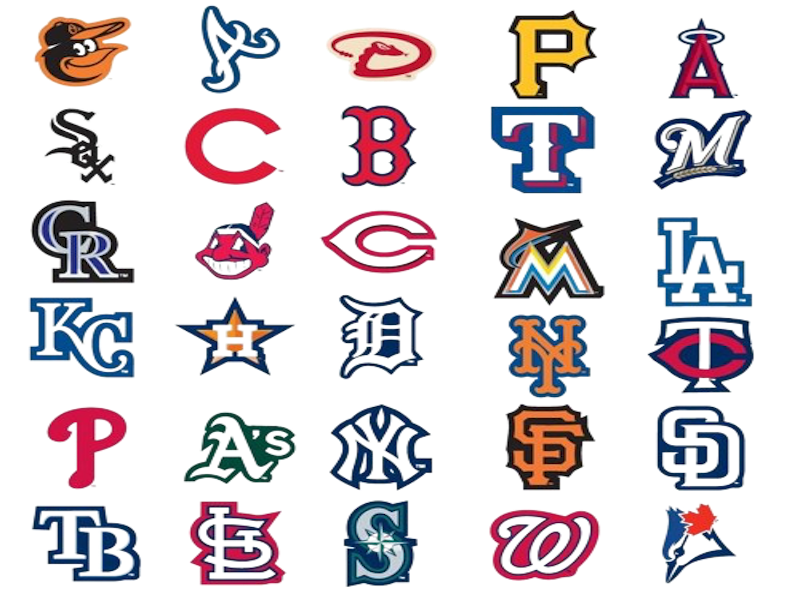
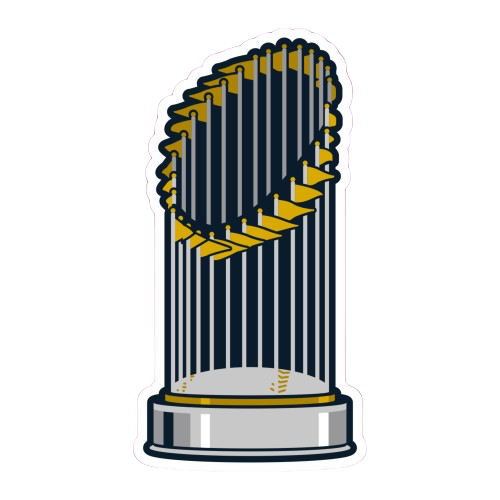

About MLB
- Major League Baseball (MLB) is a professional baseball organization and the oldest of the major professional sports leagues in the United States and Canada.
- Comprising 30 teams, divided into two leagues: the National League (NL) and the American League (AL), MLB is known for its rich history, traditions, and cultural significance.
- Founded on February 2, 1876, as the National League of Professional Baseball Clubs, MLB has evolved over the years, expanding its reach and popularity across North America.
- The MLB season typically runs from April to October, with teams competing for division titles and playoff berths, leading to the World Series, where the champions are crowned.
Teams
- MLB consists of 30 teams, divided into two leagues: the National League (NL) and the American League (AL). Each league is further divided into three divisions: East, Central, and West.
- Some of the most iconic MLB teams include the New York Yankees, Boston Red Sox, Los Angeles Dodgers, Chicago Cubs, and St. Louis Cardinals.
- Each team has its own storied history, passionate fanbase, and iconic players, contributing to the rich tapestry of Major League Baseball.
Players
- MLB has been home to some of the greatest baseball players of all time, including Babe Ruth, Willie Mays, Hank Aaron, Derek Jeter, and Barry Bonds.
- These players have left an indelible mark on the game, setting records, winning championships, and captivating audiences with their talent and skill.
- Whether it's the power-hitting prowess of Babe Ruth, the speed and agility of Willie Mays, or the all-around excellence of Hank Aaron, MLB history is filled with unforgettable moments courtesy of its legendary players.
World Series
 - The World Series is the championship series of MLB, where the champions of the National League (NL) and the American League (AL) compete for the Commissioner's Trophy.
- First held in 1903, the World Series is one of the most anticipated events in the baseball calendar, attracting fans from around the world.
- Some of the most memorable moments in MLB history have occurred during the World Series, including walk-off home runs, pitching duels, and dramatic comebacks.
MLB All-Star Game
- The MLB All-Star Game is an annual exhibition game held by Major League Baseball, featuring the best players from the National League (NL) and the American League (AL).
- The All-Star Game is a celebration of baseball excellence, showcasing the top talent in the sport and providing fans with an opportunity to see their favorite players compete on the same field.
- Since its inception in 1933, the MLB All-Star Game has become a cherished tradition, with fans voting to select the starting lineups for each league and managers selecting the remaining players.
- The game is accompanied by various festivities, including the Home Run Derby, where sluggers compete to hit the most home runs, and the All-Star Futures Game, featuring the top prospects in baseball.
Baseball Hall of Fame
- The National Baseball Hall of Fame and Museum, located in Cooperstown, New York, honors the greatest players, managers, umpires, and executives in the history of baseball.
- Established in 1936, the Baseball Hall of Fame serves as a shrine to the sport, preserving its rich history and celebrating the achievements of its most legendary figures.
- Players are elected to the Hall of Fame by the Baseball Writers' Association of America (BBWAA) based on their contributions to the game, including their performance on the field, character, integrity, and contributions to their teams.
- Each year, a select group of individuals is enshrined in the Hall of Fame during a ceremony attended by baseball luminaries and fans from around the world.